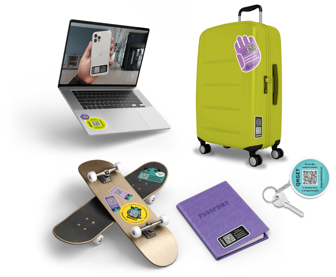

Всё утерянное обязательно возвращается
Уникальный сервис, который шифрует ваши контактные данные в QR-коде. Разместите наклейку с кодом на любую вещь и получите оберег ваших личных ценностей.

Уникальный сервис, который шифрует ваши контактные данные в QR-коде. Разместите наклейку с кодом на любую вещь и получите оберег ваших личных ценностей.
В QR-код шифруются контактные данные: номер телефона, электронная почта, соцсети, мессенджеры. При сканировании кода нашедший также увидит текстовое сообщение, где можно пообещать вознаграждение, что в разы увеличит вероятность возврата «потеряшки».
Почему клиенты выбирают наш сервис:
Неограниченное количество уникальных кодов для всей семьи — регистрируйте столько, сколько вам нужно.
Каждый QR-код можно сделать разным, например, выбрать для ребенка яркий дизайн или в виде любимого персонажа.
Текст можно переписывать сколько угодно раз.
Необязательно вводить свои контактные данные. Нашедший сможет связаться с владельцем, написав ему сообщение, которое придет в Личный кабинет и на электронную почту.
Даже если подписка на QR-код не действует, нашедший вещь все равно сможет связаться с владельцем, написав ему сообщение.
При оплате подписки вы получаете активный QR-код на 12 месяцев. Для продления действия кода необходимо оплатить подписку в Личном кабинете на сайте сервиса. Подписку можно оформить на любое количество QR-кодов.
Сервис воспитывает новую культуру среди людей и прививает привычку обязательно возвращать найденные вещи. Это отличный способ привлечь внимание к «потеряшке» и быстрее получить свою вещь обратно.
Обретите талисман, который бережно сохранит ваши вещи и поможет их быстро возвращать